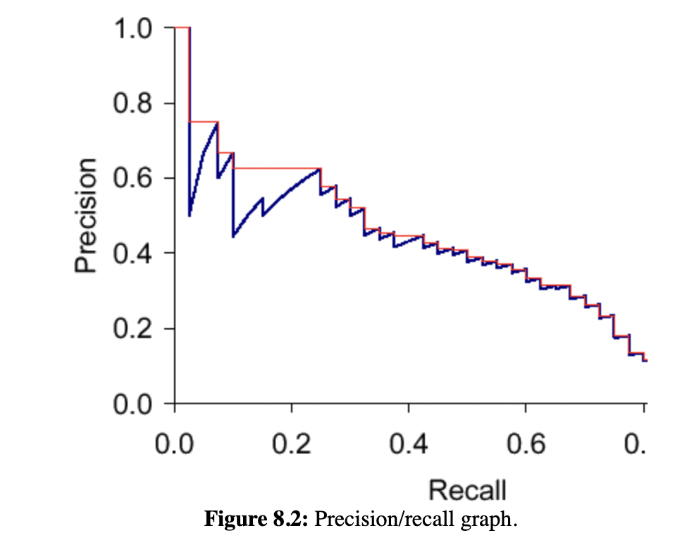

Information retrieval metrics
References:
Context and goal
Let \(S\) be the space of all documents. Given a query \(Q\),
- Let \(Retrieved(Q) \subseteq S\) be the list of retrieved documents for the query
- Let \(Relevant(Q) \subseteq S\) be the list of relevant documents for the query
Note: \(Retrieved(Q)\) and \(Relevant(Q)\) are both lists, i.e. they are ordered
Given a set of queries \(\mathcal{Q}\), we’d like to understand some useful metrics which can quantify how good/relevant our retrieved documents are.
Precision@K
Fix \(K ≤ |S|\)
Why is this called precision ?
Recall in binary classification, precision = fraction of true positives amongst all predicted positives. If you think of a relevant document as a true positive, and retrieved document as a predicted positive, the terminology become clear
Precision-recall curve
The plot of the recall vs precision for each K gives us a saw-toothed precision-recall curve.

Let us try to understand why the curve is so jagged! Look at the retrieved \(K+1\)th doc.
If this \(K + 1\)-th doc is not relevant:
- \(Recall@K(Q) = Recall@K + 1(Q)\)
- \(Precision@K(Q) = p/K\) and \(Precision@K + 1(Q) = p/K + 1\)
- This causes the vertical dips!
If this \(K + 1\)-th doc is relevant:
- \(Recall@K(Q) = r/R\) and \(Recall@K + 1(Q) = r + 1/R\)
- \(Precision@K(Q) = p/K\) and \(Precision@K + 1(Q) = p + 1/K + 1\)
- \(p/K \leq p + 1/K + 1\) because \(p \leq K\)
- This causes the up-and-right lifts!
Interpolated precision
This is the red line in the precision-recall graph. It is a non-increasing function by definition. For each recall, we plot the max precision achieved to the right of it.
This is a more useful metric than measuring the exact precision for a given recall. This is because of the fundamental assumption that a user is prepared to scan through more retrievals if precision will increase. For example:
- Say at 40% recall@\(k\) (40% of relevant docs are in my top \(k\)), my precision is 80% (80% of my top \(k\) docs are relevant to the user)
- But I also know at 50% recall@\(K\) for a larger \(K\), i.e. (50% of relevant docs are in my top \(K\)), my precision is 90% (90% of my top \(K\) docs are relevant to the user)
- I’d be prepared to scan \(K\) documents than just \(k\) documents
MAP (Mean average precision)
Let \(pos_Q(doc)\) be the position of \(doc\) in \(Retrieved(Q)\) for any doc in \(S(Q)\). If a doc is not retrieved, set \(pos_Q(doc)\) to be NA.
We define average precision as follows:
That is, we look at the average of precisions@K for each relevant doc at the \(K\) at which it is retrieved.
To make the above well-defined, define \(Precision@NA = 0\) — for relevant docs which are not retrieved, precision@its “position” is 0
Let’s see why.
- If you assume that as \(K\) increases, \(Retrieved[ : K]\) at some point contains \(Relevant\), then you see that recall values go from \(0/R, 1/R, …, R/R\) where \(R = |Relevant|\)
- When calculating the average precision, we look at only relevant docs. That is, we average over \(Precision@K\)s for all \(K\)s where a relevant doc is retrieved at position \(K\)
- In the precision-recall graph, this means drawing small rectangles with length \(Precision@K\) and width \(\frac{1}{R}\) and the area of these rectangles is precisely avg precision, which approximates area under the curve.
If we have multiple queries \(Q\in \mathcal{Q}\), then
Thus,
Discussion points:
- Each query is equally important for MAP. So MAP may be high just because it has many well performing queries but some poorly performing queries
- MAP assumes user is interested in finding many relevant documents for each query1
- MAP assumes that either a document is relevant or not (binary relevance) with no in-between state.
- MAP doesn’t care about freshness/diversity of results
MRR (Mean reciprocal rank)
The reciprocal rank score of a query \(Q\) is the inverse of the rank of the first relevant doc in \(Retrieved(Q)\), i.e.
If we have multiple queries \(Q \in \mathcal{Q}\), then
Discussion points:
- Rank of first relevant fact measures user ease to reach it
- For a perfect ranking, the first result is always relevant, so MRR would be 1.
- If no relevant documents are returned at all, MRR would be 0.
- MRR rewards systems that rank relevant results higher, especially first position.
- It does not account for the ranks of other relevant documents, only the first one.
- Useful for tasks with very few (1-2) relevant results per query, like question-answer.
- For rankings with multiple relevant results, measures like MAP are more informative than MRR.
DCG (Discounted cumulative gain)
i.e. each retrieved fact is weighted by its relevance and a position discount
A different DCG at rank \(n\) formula using the relevance more to contribute to the metric is given by
\[ DCG(n) = \sum_{k=1}^{n} \frac{2^{r_k}-1}{\log_2(k+1)} \]
Discussion points:
- DCG evaluates the gain of a document based on its position in the result list and its relevance
- It supports non-binary relevance
- The other idea is that the relevance of a doc is discounted depending on its rank (a user is not going to scroll a while to get to a relevant doc typically)
NDCG (Normalized Discounted cumulative gain)
The IDCG (Ideal discounted cumulative gain) is \(DCG(n)\) for an ideal retrieved list which is just \(Relevant\) ordered by relevance!
Define \(NDCG(n)\) as follows:
Discussion points:
- Normalization allows standardized comparisons across systems and queries.
- Cumulative means a better performing fact in top \(n\) set could out shadow other worse performing facts in set and hence make the \(NDCG(n)\) still be high
Footnotes
MAP for a retrieval list where the first few docs are relevant followed by a large chunk of irrelevant docs will be quite poor. This is not typical of a user facing retrieval system where the initial retrievals are way more important↩︎
Citation
@online{bhaskhar2023,
author = {Bhaskhar, Nivedita},
title = {Information Retrieval Metrics},
date = {2023-08-01},
url = {https://nivbhaskhar.github.io/blog/posts/2023-07-26-information-retrieval-metrics.html},
langid = {en}
}